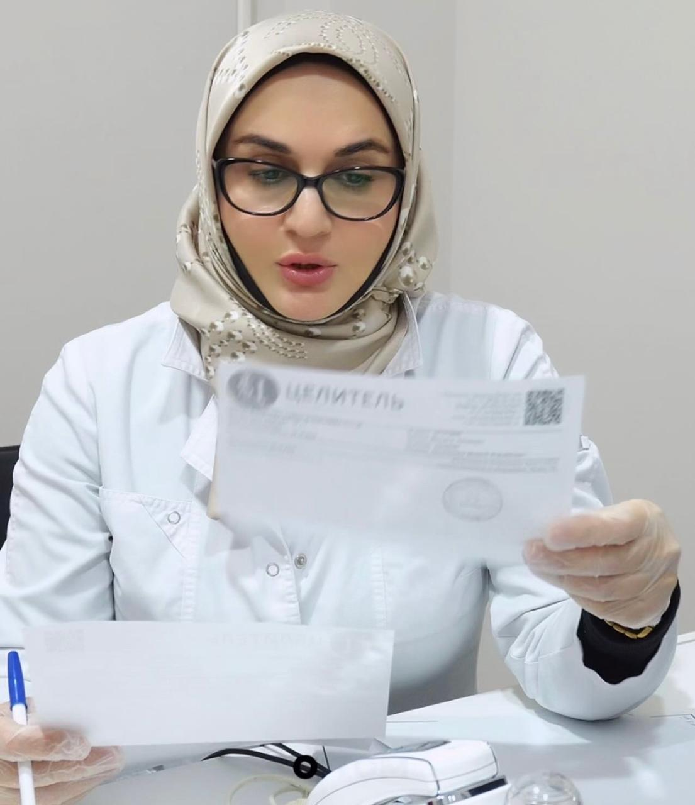
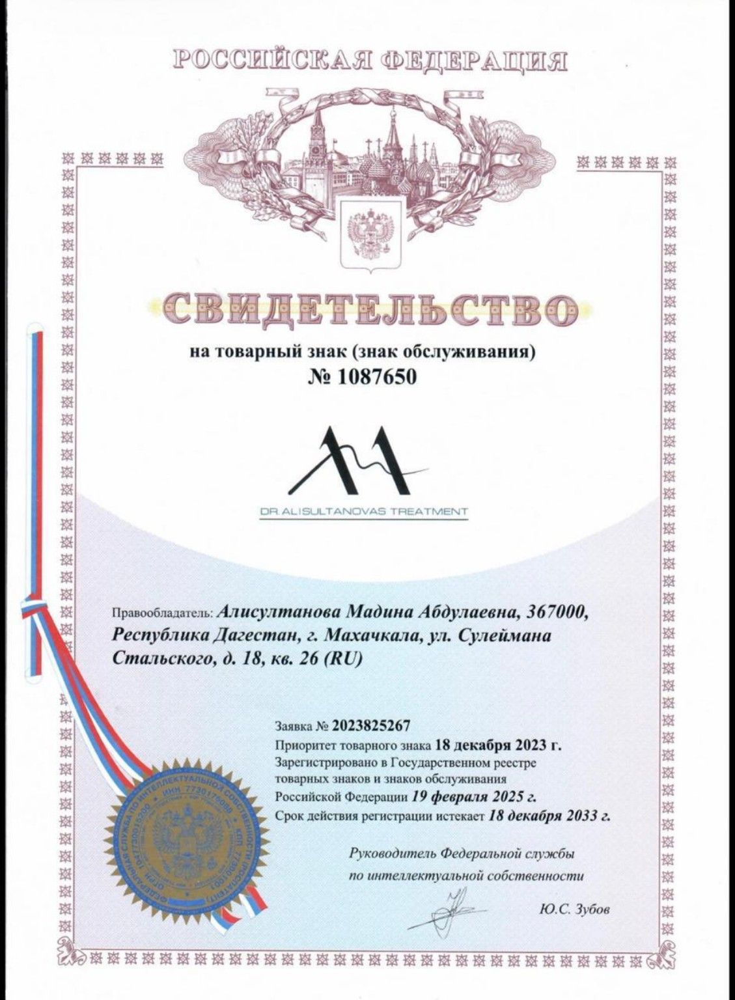
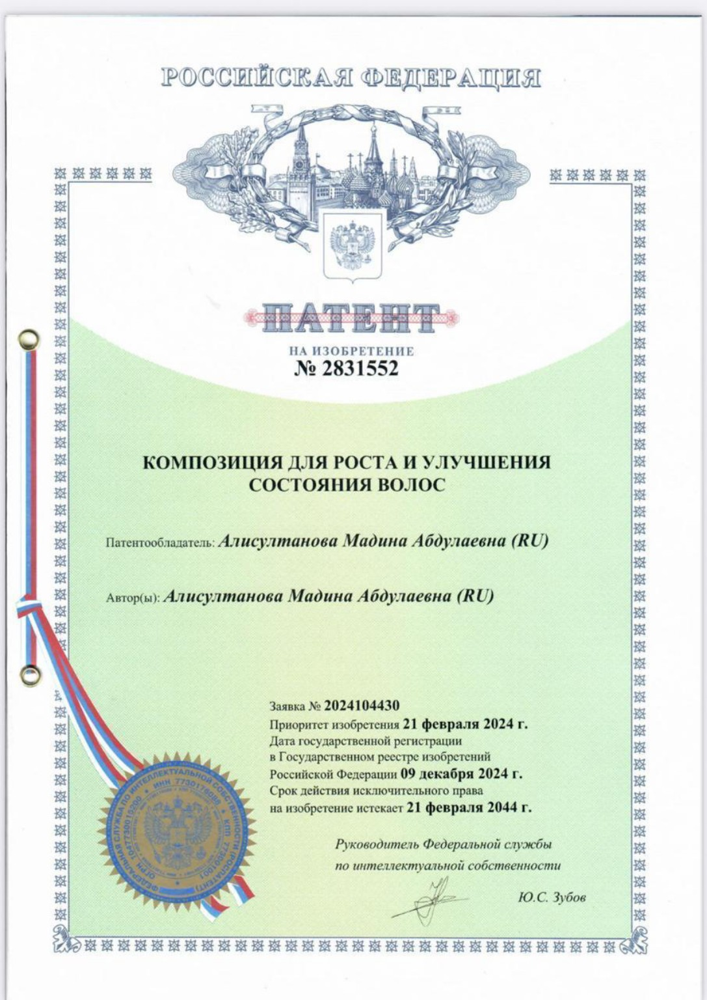
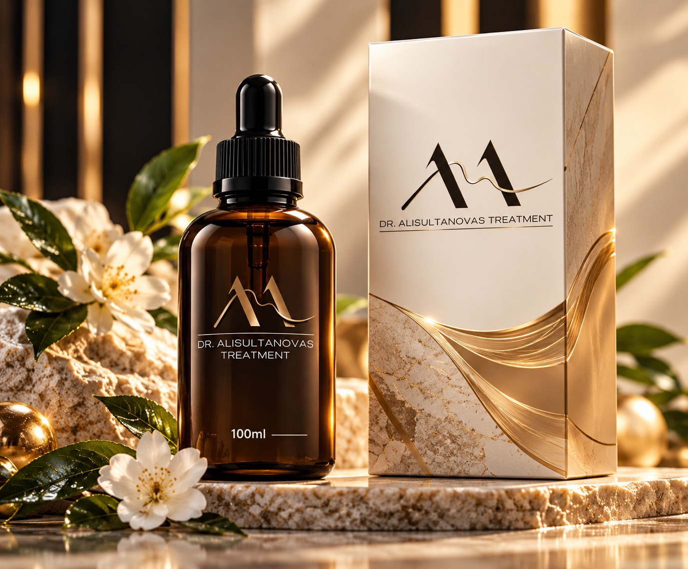
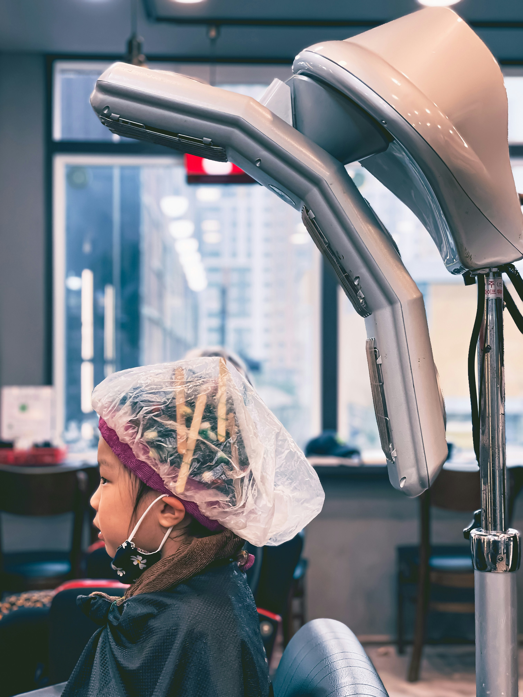
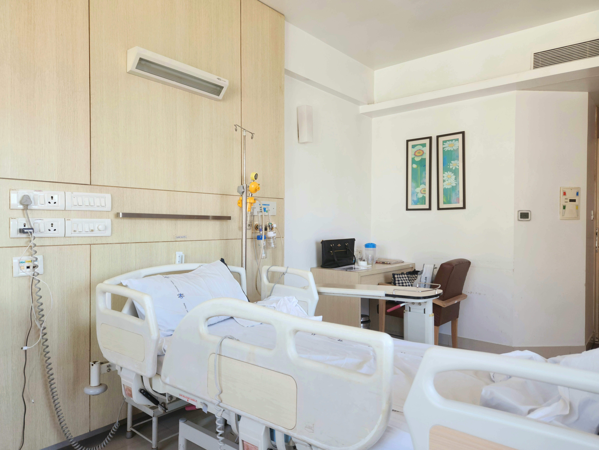
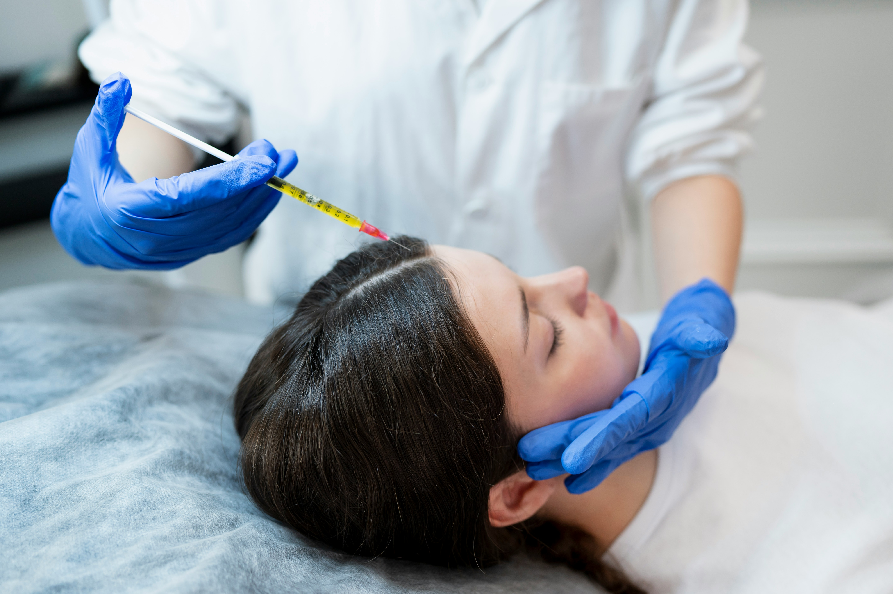

Выпадение волос
Разбор причин усиленного выпадения и факторов, влияющих на состояние волос.
Алисултанова Мадина Абдулаевна — специалист с многолетним медицинским опытом и индивидуальным подходом к состоянию волос и кожи головы.
Разобраться в жалобах и возможных причинах.
Подход с учётом индивидуальной ситуации.
Корректировка лечения в формате Premium.

Врач-дерматокосметолог, трихолог. Профессиональный путь Мадины Абдулаевны объединяет дерматовенерологию, трихологию, косметологию и многолетнюю работу над авторской разработкой для волос.
На консультации важно не просто увидеть симптом, а понять историю проблемы, возможные факторы и дальнейшую персональную тактику.
Первичная консультация помогает разобраться в ситуации и определить дальнейшую тактику.
Разбор причин усиленного выпадения и факторов, влияющих на состояние волос.
Оценка изменений густоты и индивидуальной ситуации пациента.
Работа с жалобами и состояниями кожи головы в рамках консультации.
Внимательный подход к детям и отдельная коммуникация с родителями.
Каждый раз, когда волосы начинают выпадать, многие меняют шампунь, покупают маски и сыворотки. Но проблема может сохраняться, если её причина остаётся без внимания.
Эффективный подход начинается с диагностики и понимания того, что именно запустило проблему: дефициты, гормональные факторы, стресс, воспаление кожи головы или другие причины.
Авторская эссенция может стать частью комплексного ухода и восстановления в рамках правильно подобранной стратегии.
Качество консультации одинаково высокое. Разница — в уровне участия врача после приёма.
Для тех, кто хочет разобраться в проблеме и получить персональную стратегию лечения.
Для тех, кто хочет проходить лечение под регулярным контролем и своевременно корректировать его по динамике.
Напишите «ПРИЁМ» в Direct, чтобы выбрать подходящий формат.
Каждая история индивидуальна. Поэтому консультация строится вокруг человека, его жалоб и контекста, а не вокруг универсального набора рекомендаций.
Выбрать формат ↗Ключевые этапы образования, профессионального развития и дополнительные направления подготовки.
Окончание медицинской академии.
Специализация в области дерматовенерологии.
Кожно-венерологический научно-исследовательский институт. Тема: иммунокоррекция вируса герпеса, ассоциированного с вирусом папилломы человека.
Профессиональная специализация в трихологии.
Получен патент, связанный с авторской разработкой.
Обучение: 20.01.2025–20.09.2025.
Официальные документы, подтверждающие авторство, разработку и профессиональный бренд доктора Мадины.

Зарегистрированный товарный знак доктора Мадины Алисултановой.

Автор и патентообладатель — Алисултанова Мадина Абдулаевна.

Отдельное направление работы доктора Мадины — авторская эссенция для волос, над разработкой которой велась работа в течение 8 лет.
Эссенция рассматривается как часть комплексного подхода к восстановлению и уходу за волосами.
Узнать подробнее ↗Фотографии клиники, работы и профессиональной среды доктора Мадины.



Выберите удобную локацию и уточните доступное время приёма.
ул. Танкаева, 57
Адрес уточняется при записи
Напишите «ПРИЁМ», чтобы выбрать подходящий формат консультации.
Написать доктору Мадине ↗